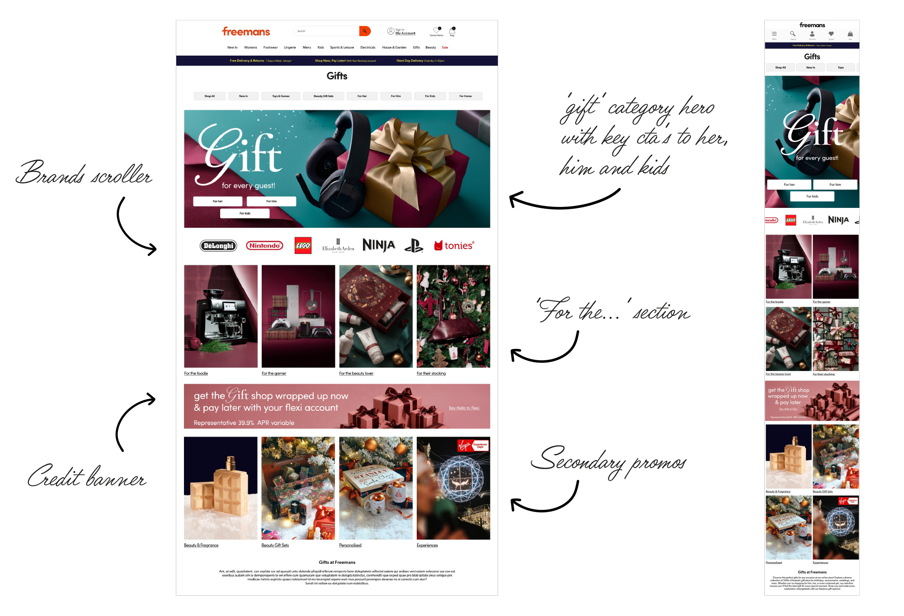
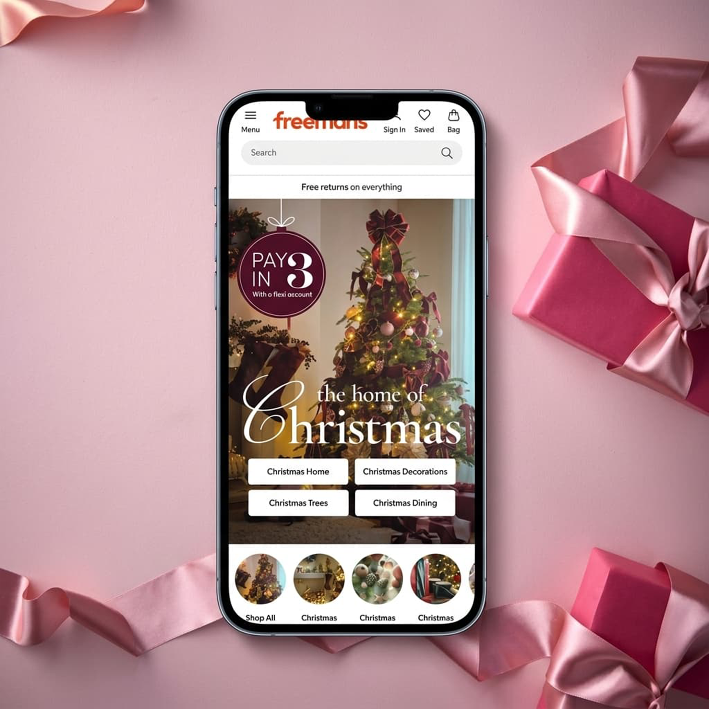
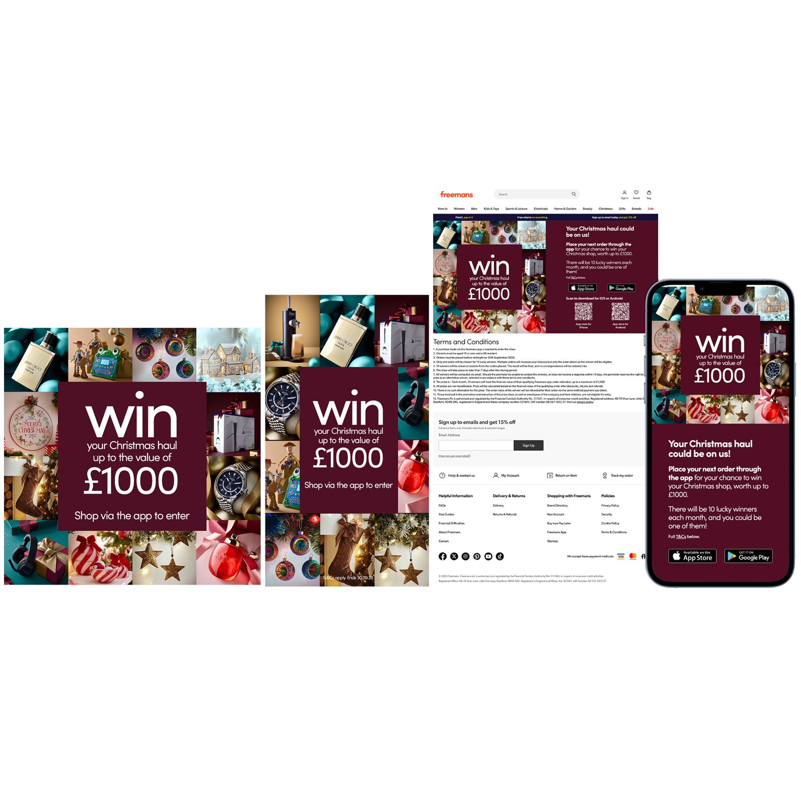

These initial concepts were what I developed to present to stakeholders with the proposed look and feel for the Christmas campaign landing page across the Freemans and Kaleidoscope websites. The designs explored how the campaign typography guidelines, photography and visual styling could come together to create a cohesive festive experience, while ensuring key commercial messaging remained prominent. This included giving the credit banner clear visibility within the page, recognising its importance in communicating a key customer proposition. The approved direction then provided a visual foundation for the wider Christmas campaign and onsite updates.

These initial concepts were what I developed to present to stakeholders with the proposed look and feel for the Christmas campaign landing page across the Freemans and Kaleidoscope websites. The designs explored how the campaign typography guidelines, photography and visual styling could come together to create a cohesive festive experience, while ensuring key commercial messaging remained prominent. This included giving the credit banner clear visibility within the page, recognising its importance in communicating a key customer proposition. The approved direction then provided a visual foundation for the wider Christmas campaign and onsite updates.


To increase app engagement, I created a cohesive suite of organic social assets encouraging customers to enter a competition to win up to £1,000 worth of products by shopping via the app. These static social posts were designed to seamless guide users from feed discovery directly to the landing page and app to complete their purchase."
